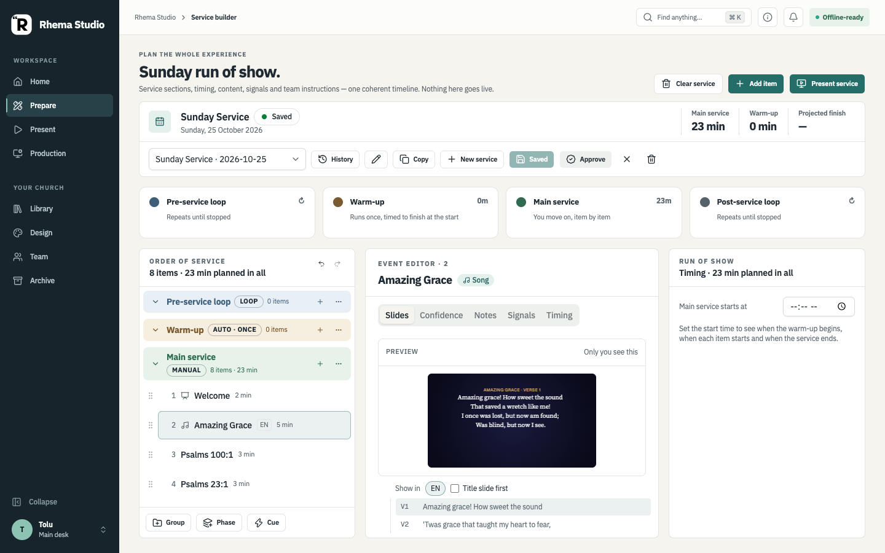
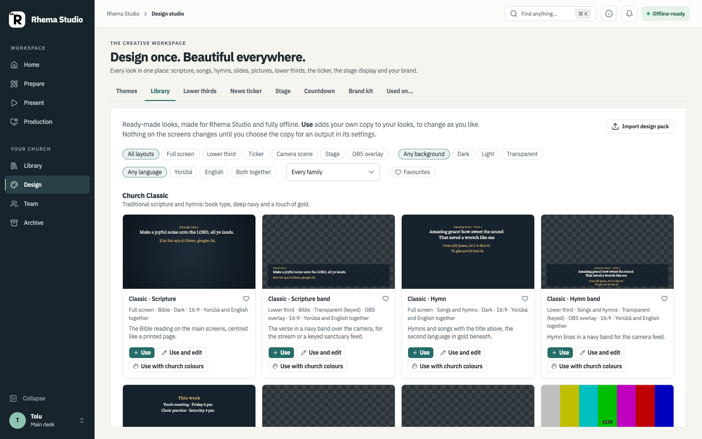
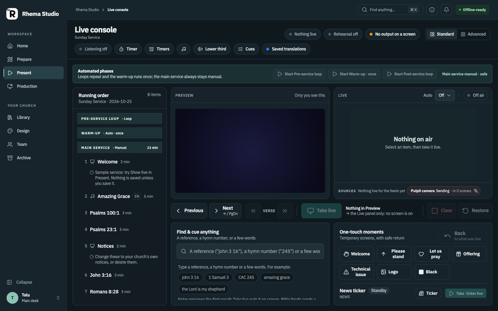
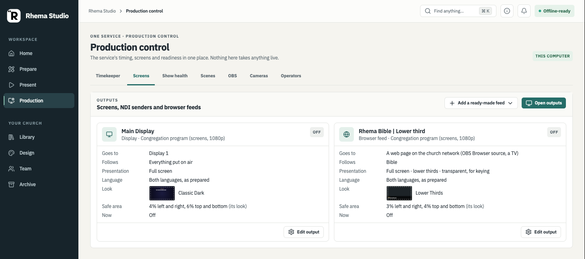

Current behavior and approved direction: the six primary destinations are present in the current application. Some combined workflows and connected-device acceptance are still in progress.
Prepare the service
Prepare is for building the service plan: phases, moments, content, timing, and related notes. It is the place to arrange what the team expects to do. Saving that plan should not itself take a scene, activate a source, or change what an audience sees.

Design Library
Design is the workspace for reusable looks and graphics. The current interface has gallery cards and separate Use and Use-and-edit actions. The broader owner-approved goal is to make Library, Design, and service moments connect without duplicate asset repositories; the complete integrated journey still needs verification.

Live, Preview, and Program
- Preview is private preparation for the operator. It should be clearly marked as private.
- Program is the content currently being rendered to a specific output.
- Take is an explicit, authorized action that changes an output. Selecting content or saving a design is not a Take.
- A successful command does not by itself prove that a receiver displayed the change; output status must be checked separately.

Outputs and screens
Rhema Studio models named outputs with distinct roles. A congregation display, Stage confidence monitor, browser feed, signage display, and OBS program do not all show the same material by default. Output assignment and host permissions determine which content a device may receive.
Scene selection and source activation are separate actions. Bible, song, hymn, ticker, timer, and camera sources can be rendered through audience-specific output choices. OBS remains an independent online production path; it is not the congregation display.

History and service-run timing
History includes a read-only review of a saved service-run checkpoint. When the journal has enough timing evidence, the review compares an event's planned duration with its actual elapsed duration and shows the difference. Journaled events absent from the captured plan are identified separately.
For an active run, an open event is measured only through the last saved checkpoint and marked as not final. If timing is unstarted, interrupted, truncated by recovery, or missing a valid anchor or finish mark, the review says the duration is unknown instead of showing zero. This timing summary does not prove that a physical screen displayed the event.
Opening the review does not restore the captured plan into Prepare or send anything to an output. See History & run review for the current behavior and its limits. The current screenshot set predates this review, so no illustrative image is used here.
Roles and permissions
Host pairing assigns a role to a connected desk. The host service checks commands and scopes; a browser cannot grant itself more access. The role is a boundary for what an operator may read or request, not a claim that a complete standalone page exists for every role.
Output scope limits which congregation outputs a Screens desk may act on. Multi-output actions require the appropriate host grant and target checks. Persistent reusable scene changes are separate from temporary service drafts and need delegated authority or an approved request.
See the operator overview for role guides and connected operator access for host authorization details.